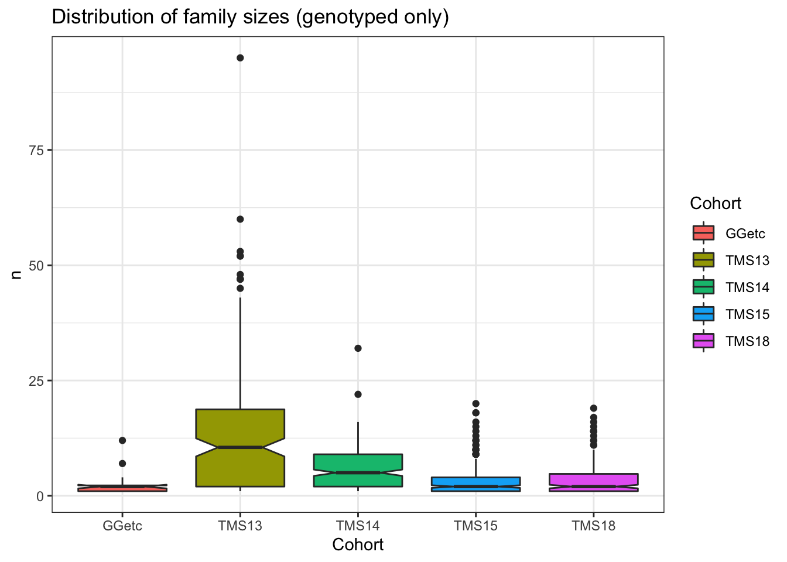

Last updated: 2021-07-14
Checks: 7 0
Knit directory: implementGMSinCassava/
This reproducible R Markdown analysis was created with workflowr (version 1.6.2). The Checks tab describes the reproducibility checks that were applied when the results were created. The Past versions tab lists the development history.
Great! Since the R Markdown file has been committed to the Git repository, you know the exact version of the code that produced these results.
Great job! The global environment was empty. Objects defined in the global environment can affect the analysis in your R Markdown file in unknown ways. For reproduciblity it’s best to always run the code in an empty environment.
The command set.seed(20210504) was run prior to running the code in the R Markdown file. Setting a seed ensures that any results that rely on randomness, e.g. subsampling or permutations, are reproducible.
Great job! Recording the operating system, R version, and package versions is critical for reproducibility.
Nice! There were no cached chunks for this analysis, so you can be confident that you successfully produced the results during this run.
Great job! Using relative paths to the files within your workflowr project makes it easier to run your code on other machines.
Great! You are using Git for version control. Tracking code development and connecting the code version to the results is critical for reproducibility.
The results in this page were generated with repository version 2953ee6. See the Past versions tab to see a history of the changes made to the R Markdown and HTML files.
Note that you need to be careful to ensure that all relevant files for the analysis have been committed to Git prior to generating the results (you can use wflow_publish or wflow_git_commit). workflowr only checks the R Markdown file, but you know if there are other scripts or data files that it depends on. Below is the status of the Git repository when the results were generated:
Ignored files:
Ignored: .DS_Store
Ignored: .Rhistory
Ignored: .Rproj.user/
Ignored: analysis/accuracies.png
Ignored: analysis/fig2.png
Ignored: analysis/fig3.png
Ignored: analysis/fig4.png
Ignored: code/.DS_Store
Ignored: data/.DS_Store
Untracked files:
Untracked: accuracies.png
Untracked: analysis/docs/
Untracked: analysis/speedUpPredCrossVar.Rmd
Untracked: code/AlphaAssign-Python/
Untracked: code/calcGameticLD.cpp
Untracked: code/col_sums.cpp
Untracked: code/convertDart2vcf.R
Untracked: code/helloworld.cpp
Untracked: code/imputationFunctions.R
Untracked: code/matmult.cpp
Untracked: code/misc.cpp
Untracked: code/test.cpp
Untracked: data/CassavaGeneticMap/
Untracked: data/DatabaseDownload_2021May04/
Untracked: data/GBSdataMasterList_31818.csv
Untracked: data/IITA_GBStoPhenoMaster_33018.csv
Untracked: data/NRCRI_GBStoPhenoMaster_40318.csv
Untracked: data/PedigreeGeneticGainCycleTime_aafolabi_01122020.xls
Untracked: data/blups_forCrossVal.rds
Untracked: data/chr1_RefPanelAndGSprogeny_ReadyForGP_72719.fam
Untracked: data/dosages_IITA_filtered_2021May13.rds
Untracked: data/genmap_2021May13.rds
Untracked: data/haps_IITA_filtered_2021May13.rds
Untracked: data/recombFreqMat_1minus2c_2021May13.rds
Untracked: fig2.png
Untracked: fig3.png
Untracked: figure/
Untracked: output/IITA_CleanedTrialData_2021May10.rds
Untracked: output/IITA_ExptDesignsDetected_2021May10.rds
Untracked: output/IITA_blupsForModelTraining_twostage_asreml_2021May10.rds
Untracked: output/IITA_trials_NOT_identifiable.csv
Untracked: output/crossValPredsA.rds
Untracked: output/crossValPredsAD.rds
Untracked: output/cvAD_5rep5fold_markerEffects.rds
Untracked: output/cvAD_5rep5fold_meanPredAccuracy.rds
Untracked: output/cvAD_5rep5fold_parentfolds.rds
Untracked: output/cvAD_5rep5fold_predMeans.rds
Untracked: output/cvAD_5rep5fold_predVars.rds
Untracked: output/cvAD_5rep5fold_varPredAccuracy.rds
Untracked: output/cvDirDom_5rep5fold_markerEffects.rds
Untracked: output/cvDirDom_5rep5fold_meanPredAccuracy.rds
Untracked: output/cvDirDom_5rep5fold_parentfolds.rds
Untracked: output/cvDirDom_5rep5fold_predMeans.rds
Untracked: output/cvDirDom_5rep5fold_predVars.rds
Untracked: output/cvDirDom_5rep5fold_varPredAccuracy.rds
Untracked: output/cvMeanPredAccuracyA.rds
Untracked: output/cvMeanPredAccuracyAD.rds
Untracked: output/cvPredMeansA.rds
Untracked: output/cvPredMeansAD.rds
Untracked: output/cvVarPredAccuracyA.rds
Untracked: output/cvVarPredAccuracyAD.rds
Untracked: output/genomicPredictions_ModelAD.rds
Untracked: output/genomicPredictions_ModelDirDom.rds
Untracked: output/kinship_A_IITA_2021May13.rds
Untracked: output/kinship_D_IITA_2021May13.rds
Untracked: output/markEffsTest.rds
Untracked: output/markerEffects.rds
Untracked: output/markerEffectsA.rds
Untracked: output/markerEffectsAD.rds
Untracked: output/maxNOHAV_byStudy.csv
Untracked: output/obsCrossMeansAndVars.rds
Untracked: output/parentfolds.rds
Untracked: output/ped2check_genome.rds
Untracked: output/ped2genos.txt
Untracked: output/pednames2keep.txt
Untracked: output/pednames_Prune100_25_pt25.log
Untracked: output/pednames_Prune100_25_pt25.nosex
Untracked: output/pednames_Prune100_25_pt25.prune.in
Untracked: output/pednames_Prune100_25_pt25.prune.out
Untracked: output/potential_dams.txt
Untracked: output/potential_sires.txt
Untracked: output/predVarTest.rds
Untracked: output/samples2keep_IITA_2021May13.txt
Untracked: output/samples2keep_IITA_MAFpt01_prune50_25_pt98.log
Untracked: output/samples2keep_IITA_MAFpt01_prune50_25_pt98.nosex
Untracked: output/samples2keep_IITA_MAFpt01_prune50_25_pt98.prune.in
Untracked: output/samples2keep_IITA_MAFpt01_prune50_25_pt98.prune.out
Untracked: output/verified_ped.txt
Note that any generated files, e.g. HTML, png, CSS, etc., are not included in this status report because it is ok for generated content to have uncommitted changes.
These are the previous versions of the repository in which changes were made to the R Markdown (analysis/03-validatePedigree.Rmd) and HTML (docs/03-validatePedigree.html) files. If you’ve configured a remote Git repository (see ?wflow_git_remote), click on the hyperlinks in the table below to view the files as they were in that past version.
| File | Version | Author | Date | Message |
|---|---|---|---|---|
| html | e66bdad | wolfemd | 2021-06-10 | Build site. |
| Rmd | a8452ba | wolfemd | 2021-06-10 | Initial build of the entire page upon completion of all |
Read the pedigree I downloaded for IITA
library(tidyverse); library(magrittr)
ped<-read_delim(here::here("data/DatabaseDownload_2021May04","pedigree.txt"),
delim = "\t")Number of full-sib families?
ped %>% distinct(Female_Parent,Male_Parent) %>% nrow()[1] 1672Filter: Keep only complete pedigree records.
ped %<>%
filter(!is.na(Female_Parent),
!is.na(Male_Parent))Summarize distribution of full-sib family sizes
ped %>%
count(Female_Parent,Male_Parent) %>% arrange(desc(n)) %>% summary(.$n) Female_Parent Male_Parent n
Length:1451 Length:1451 Min. : 1.000
Class :character Class :character 1st Qu.: 1.000
Mode :character Mode :character Median : 3.000
Mean : 5.909
3rd Qu.: 7.000
Max. :275.000 ped %>% head# A tibble: 6 x 4
Accession Female_Parent Male_Parent Cross_Type
<chr> <chr> <chr> <chr>
1 TMS13F1002P0001 IITA-TMS-IBA930265 IITA-TMS-MOK980068 biparental
2 TMS13F1002P0002 IITA-TMS-IBA930265 IITA-TMS-MOK980068 biparental
3 TMS13F1002P0003 IITA-TMS-IBA930265 IITA-TMS-MOK980068 biparental
4 TMS13F1002P0004 IITA-TMS-IBA930265 IITA-TMS-MOK980068 biparental
5 TMS13F1002P0005 IITA-TMS-IBA930265 IITA-TMS-MOK980068 biparental
6 TMS13F1002P0006 IITA-TMS-IBA930265 IITA-TMS-MOK980068 biparentalGoal is to identify DNA samples names for listed accessions and parents in the pedigree. Important to choose same samples used in genomic predictions where possible, esp. phenotyped training clones.
However, there may be non-phenotyped clones that are genotyped genomic selection progeny, which I still want in my analysis.
First with the union of the parent and accession IDs in the pedigree.
pednames<-union(ped$Accession,union(ped$Female_Parent,ped$Male_Parent)) %>%
tibble(germplasmName=.)
pednames$germplasmName %>% length # number of names in ped[1] 8276Add a “Cohort” variable corresponding to the genetic groups or cycles in the germplasm.
pednames %<>%
mutate(Cohort=NA,
Cohort=ifelse(grepl("TMS18",germplasmName,ignore.case = T),"TMS18",
ifelse(grepl("TMS15",germplasmName,ignore.case = T),"TMS15",
ifelse(grepl("TMS14",germplasmName,ignore.case = T),"TMS14",
ifelse(grepl("TMS13|2013_",germplasmName,ignore.case = T),"TMS13","GGetc")))))
pednames %>%
count(Cohort)# A tibble: 5 x 2
Cohort n
<chr> <int>
1 GGetc 343
2 TMS13 2627
3 TMS14 1979
4 TMS15 1236
5 TMS18 2091The names in the pedigree downloaded from cassavabase should match the names in the germplasmName variable in the plot-basis pheno data, also downloaded from cassavabase.
From that plot-basis data, make a data.frame of the unique germplasmName-to-FullSampleName matches, where FullSampleName is the column with names matching VCF files / DNA samples.
dbdata<-readRDS(here::here("output","IITA_ExptDesignsDetected_2021May10.rds"))
phenos2genos<-dbdata %>%
distinct(GID,germplasmName,FullSampleName) %>%
filter(!is.na(FullSampleName))
phenos2genos %>% head# A tibble: 6 x 3
germplasmName FullSampleName GID
<chr> <chr> <chr>
1 IITA-TMS-IBA30572 I30572:250253643 I30572:250253643
2 IITA-TMS-IBA8200058 I8200058:250304538 I8200058:250304538
3 IITA-TMS-IBA9102324 I9102324:250090766 I9102324:250090766
4 TMEB117 TMEB117:250253666 TMEB117:250253666
5 TMEB1 TMEB1:250253593 TMEB1:250253593
6 IITA-TMS-IBA920326 I920326:250090768 I920326:250090768 How many from each cohort in the pednames match a germplasmName with a FullSampleName in the plot-basis trial data?
pednames %>%
inner_join(phenos2genos) %>%
count(Cohort)# A tibble: 5 x 2
Cohort n
<chr> <int>
1 GGetc 162
2 TMS13 2422
3 TMS14 1517
4 TMS15 858
5 TMS18 982So about half of all the germplasmName in the pedigree I downloaded are genotyped and match plot-basis data that I have.
Just to check: does that mostly correspond to the number that have a BLUP for at least one trait?
blups<-readRDS(file=here::here("output","IITA_blupsForModelTraining_twostage_asreml_2021May10.rds"))
blups %>%
select(Trait,blups) %>%
unnest(blups) %>%
distinct(GID) %$% GID -> gidWithBLUPs
pednames %>%
inner_join(phenos2genos) %>%
filter(FullSampleName %in% gidWithBLUPs) %>%
count(Cohort)# A tibble: 5 x 2
Cohort n
<chr> <int>
1 GGetc 162
2 TMS13 2402
3 TMS14 1517
4 TMS15 837
5 TMS18 981Almost all of those also translate into a BLUP for at least one trait.
But I want haplotypes of genotyped progeny in the pedigree even if they aren’t phenotyped.
The *.fam file for the RefPanelAndGSprogeny VCF I will ultimately use to extract haplotypes and do predictions with is already in the data/ directory because it’s used in the standard match-genos-to-phenos step.
gids_in_fam<-read.table(here::here("data",
"chr1_RefPanelAndGSprogeny_ReadyForGP_72719.fam"),
stringsAsFactors = F, header = F)$V2
length(gids_in_fam)[1] 21856Split the names based on a “:” for the GBS samples, and “_A” seems to work (for IITA) to split the DArT sample ID from the germplasmName for DArTseqLD samples. The suffix / ID added to DNA sample names at DARt seems to vary depending on what gets submitted to them. GBS-era samples (almost) 100% had the “:” separator.
gids_in_fam %<>%
tibble(FullSampleName=.) %>%
separate(FullSampleName,c("germplasmName","DNA_ID"),":|_A",remove = F)
gids_in_fam %>%
filter(grepl("TMS18",FullSampleName)) %>% nrow()[1] 2420There are 2420 “TMS18” clones genotyped.
981 of them are in the pedigree and phenotyped.
How many of the pednames without genos+phenos have genos-only?
pednames %>%
anti_join(phenos2genos) %>%
inner_join(gids_in_fam) %>% nrow()[1] 39Only 39 new pedigree lines get matched to genos…. none from TMS18.
Why are there so many genotyped “TMS18” that don’t have pedigree?
I would expect more lines to exist and have a pedigree than we ultimately genotype.
But anything genotyped should be pedigreed.
I cannot solve this problem and will move on without those lines.
pednames2genos<-pednames %>%
inner_join(phenos2genos) %>%
bind_rows(pednames %>%
anti_join(phenos2genos) %>%
inner_join(gids_in_fam %>% select(-DNA_ID)))
pednames2genos %>% count(Cohort) # A tibble: 5 x 2
Cohort n
<chr> <int>
1 GGetc 162
2 TMS13 2424
3 TMS14 1519
4 TMS15 893
5 TMS18 982Now make a pedigree with both Accession and parent names matching the genos (FullSampleName) rather than phenos (germplasmName).
ped2genos<-ped %>%
rename(germplasmName=Accession) %>%
select(-Cross_Type) %>%
inner_join(pednames2genos %>% select(-GID)) %>%
left_join(pednames2genos %>%
select(-GID,-Cohort) %>%
rename(Female_Parent=germplasmName,
DamID=FullSampleName)) %>%
left_join(pednames2genos %>%
select(-GID,-Cohort) %>%
rename(Male_Parent=germplasmName,
SireID=FullSampleName))
ped2genos %<>%
filter(!is.na(FullSampleName),
!is.na(DamID),
!is.na(SireID))In the end, considering only pedigree entries where the entire trio (offspring + both parents) are genotyped, the pedigree has 5921 entries to check.
ped2genos %>% count(Cohort,DamID,SireID) %>%
ggplot(.,aes(x=Cohort,y=n,fill=Cohort)) +
geom_boxplot(notch = T) + theme_bw() +
ggtitle("Distribution of family sizes (genotyped only)")
| Version | Author | Date |
|---|---|---|
| e66bdad | wolfemd | 2021-06-10 |
ped2genos %>%
count(Cohort,DamID,SireID) %$% summary(n) Min. 1st Qu. Median Mean 3rd Qu. Max.
1.000 1.000 3.000 6.023 8.000 95.000 Number of families with at least 10 genotyped members, by cohort:
ped2genos %>%
count(Cohort,DamID,SireID) %>%
filter(n>=10) %>%
count(Cohort)# A tibble: 5 x 2
Cohort n
<chr> <int>
1 GGetc 1
2 TMS13 101
3 TMS14 58
4 TMS15 17
5 TMS18 16ped2genos %>%
select(FullSampleName,DamID,SireID) %>%
write.table(.,file=here::here("output","ped2genos.txt"),row.names=F, col.names=F, quote=F)
## Potential sires and dams files
ped2genos %>%
select(FullSampleName,DamID) %>%
write.table(.,file=here::here("output","potential_dams.txt"),row.names=F, col.names=F, quote=F)
ped2genos %>%
select(FullSampleName,SireID) %>%
write.table(.,file=here::here("output","potential_sires.txt"),row.names=F, col.names=F, quote=F)Move to remote server, with Python 3, to use AlphaAssign.
Static downloaded version of AlphaAssing in code/AlphaAssign-Python/.
AlphaAssign will accept a binary plink fileset.
I have one for the “RefPanelAndGSprogeny” VCF set, here: /home/jj332_cas/CassavaGenotypeData/nextgenImputation2019/ImputationStageIII_72619/
Same filenames as the VCFs chr*_RefPanelAndGSprogeny_ReadyForGP_72719..
Concatenate across chromosomes.
require(furrr); options(mc.cores=18); plan(multiprocess)
pathIn<-"/home/jj332_cas/CassavaGenotypeData/nextgenImputation2019/ImputationStageIII_72619/"
pathOut<-"/home/jj332_cas/marnin/implementGMSinCassava/data/"
nameOfchromWiseVCFs<-"RefPanelAndGSprogeny_ReadyForGP_72719"
chroms<-1:18
furrr::future_map(chroms,function(chroms){
system(paste0("tabix -f -p vcf ",pathIn,"chr",chroms,"_",
nameOfchromWiseVCFs,".vcf.gz")) })
system(paste0("bcftools concat --allow-overlaps ",
"--output ",pathOut,
"AllChrom_",nameOfchromWiseVCFs,".vcf.gz ",
"--output-type z --threads 6 ",
paste0(pathIn,"chr",chroms,"_",nameOfchromWiseVCFs,".vcf.gz",
collapse = " "))) pathIn<-"/home/jj332_cas/marnin/implementGMSinCassava/data/"
pathOut<-pathIn
vcfName<-"AllChrom_RefPanelAndGSprogeny_ReadyForGP_72719"
system(paste0("export PATH=/programs/plink-1.9-x86_64-beta3.30:$PATH;",
"plink --vcf ",pathIn,vcfName,".vcf.gz ",
"--make-bed --const-fid --keep-allele-order ",
"--out ",pathOut,vcfName))First try to run AlphaAssign
cd /home/jj332_cas/marnin/implementGMSinCassava/code/AlphaAssign-Python/
python AlphaAssign.py bfile=/home/jj332_cas/marnin/implementGMSinCassava/data/AllChrom_RefPanelAndGSprogeny_ReadyForGP_72719 \
out=/home/jj332_cas/marnin/implementGMSinCassava/output/alphaAssignOutput_iita_pedigree.txt \
pedigree=/home/jj332_cas/marnin/implementGMSinCassava/output/ped2genos.txt \
potentialSires=/home/jj332_cas/marnin/implementGMSinCassava/output/potential_sires.txt \
potentialDams=/home/jj332_cas/marnin/implementGMSinCassava/output/potential_dams.txt \
checkPedigree=TRUE fullOutput=TRUEResults did not seem right. Most parents rejected.
Try again, after reviewing emails with Andrew Whalen from 2018, try running without the pedigree supplied.
cd /home/jj332_cas/marnin/implementGMSinCassava/code/AlphaAssign-Python/
python AlphaAssign.py bfile=/home/jj332_cas/marnin/implementGMSinCassava/data/AllChrom_RefPanelAndGSprogeny_ReadyForGP_72719 \
out=/home/jj332_cas/marnin/implementGMSinCassava/output/alphaAssignOutput_iita_pedigree \
potentialSires=/home/jj332_cas/marnin/implementGMSinCassava/output/potential_sires.txt \
potentialDams=/home/jj332_cas/marnin/implementGMSinCassava/output/potential_dams.txt \
checkPedigree=TRUE fullOutput=TRUEThe call above threw an error at the very end of a 6 hour run, and left no output or record of the log.
**ABORTED use of AlphaAssign for current purposes. Return to an approach I originally worked out in 2016 using the IBD calculator in plink1.9.
Alternative to the below: Could compute everything manually based on mendelian rules. Kinship coefficients directly from the relationship matrix used for prediction would also be useful, for example, the estimated inbreeding coefficient of an individual is 1/2 the relationship of its parents.
PLINK1.9 pipeline to use:
AllChrom_RefPanelAndGSprogeny_ReadyForGP_72719) to only lines in the pedigree.--indep-pairwise 100 25 0.25 stringent, but somewhat arbitrary--genomeDetermine parent-offspring relationship status based on plink IBD:
should have a kinship \(\hat{\pi} \approx 0.5\).
Three standard IBD probabilities are defined for each pair; the probability of sharing zero (Z0), one (Z1) or two (Z2) alleles at a randomly chosen locus IBD.
The expectation for siblings in terms of these probabilities is Z0=0.25, Z1=0.5 and Z2=0.25.
The expectation for parent-offspring pairs is Z0=0, Z1=1 and Z2=0.
Based on work I did in 2016 (never published), declare a parent-offspring pair where: Z0<0.313 and Z1>0.668.
ped2check<-read.table(file=here::here("output","ped2genos.txt"),
header = F, stringsAsFactors = F)
pednames<-union(ped2check$V1,union(ped2check$V2,ped2check$V3)) %>%
tibble(FID=0,IID=.)
write.table(pednames,file=here::here("output","pednames2keep.txt"),
row.names = F, col.names = F, quote = F)Checked plink’s order-of-operations and combing –keep and –indep-pairwise in the same filter call should result in the correct ordering of subset samples first and then LD prune.
cd /home/jj332_cas/marnin/implementGMSinCassava/
export PATH=/programs/plink-1.9-x86_64-beta3.30:$PATH;
plink --bfile data/AllChrom_RefPanelAndGSprogeny_ReadyForGP_72719 \
--keep output/pednames2keep.txt \
--indep-pairwise 100 25 0.25 \
--genome \
--out output/pednames_Prune100_25_pt25;Creates a 2GB *.genome, 5634 samples worth of pairwise relationships.
cd /home/jj332_cas/marnin/implementGMSinCassava/
export PATH=/programs/plink-1.9-x86_64-beta3.30:$PATH;
plink --bfile data/AllChrom_RefPanelAndGSprogeny_ReadyForGP_72719 \
--indep-pairwise 100 25 0.25 --out output/Prune100_25_pt25;
plink --bfile data/AllChrom_RefPanelAndGSprogeny_ReadyForGP_72719 \
--extract output/Prune100_25_pt25.prune.in --genome \
--out output/AllChrom_RefPanelAndGSprogeny_ReadyForGP_72719_Prune100_25_pt25That wastefully creates a 40GB *.genome file with all pairwise relationships.
Brute force solution is to read that, grab the needed relationships, and delete it….
library(tidyverse); library(magrittr); library(data.table)
genome<-fread(here::here("output/",
"pednames_Prune100_25_pt25.genome"),
stringsAsFactors = F,header = T) %>%
as_tibble
ped2check<-read.table(file=here::here("output","ped2genos.txt"),
header = F, stringsAsFactors = F)
head(genome)
# # A tibble: 6 x 14
# FID1 IID1 FID2 IID2 RT EZ Z0 Z1 Z2 PI_HAT PHE DST
# <int> <chr> <int> <chr> <chr> <int> <dbl> <dbl> <dbl> <dbl> <int> <dbl>
# 1 0 TMS15F1… 0 TMS15F… OT 0 1 0 0 0 -1 0.727
# 2 0 TMS15F1… 0 TMS15F… OT 0 0.892 0.056 0.0525 0.0805 -1 0.765
# 3 0 TMS15F1… 0 TMS15F… OT 0 1 0 0 0 -1 0.723
# 4 0 TMS15F1… 0 TMS15F… OT 0 1 0 0 0 -1 0.729
# 5 0 TMS15F1… 0 TMS15F… OT 0 0.407 0.593 0 0.296 -1 0.780
# 6 0 TMS15F1… 0 TMS15F… OT 0 1 0 0 0 -1 0.721
dim(genome)
# [1] 15868161 14ped2check_genome<-genome %>%
semi_join(ped2check %>% rename(IID1=V1,IID2=V2)) %>%
bind_rows(genome %>% semi_join(ped2check %>% rename(IID1=V2,IID2=V1))) %>%
bind_rows(genome %>% semi_join(ped2check %>% rename(IID1=V1,IID2=V3))) %>%
bind_rows(genome %>% semi_join(ped2check %>% rename(IID1=V3,IID2=V1)))
saveRDS(ped2check_genome,file=here::here("output","ped2check_genome.rds"))cd /home/jj332_cas/marnin/implementGMSinCassava/output/;
rm pednames_Prune100_25_pt25.genomelibrary(tidyverse); library(magrittr);
ped2check_genome<-readRDS(file=here::here("output","ped2check_genome.rds"))
ped2check_genome %<>%
select(IID1,IID2,Z0,Z1,Z2,PI_HAT)
ped2check<-read.table(file=here::here("output","ped2genos.txt"),
header = F, stringsAsFactors = F) %>%
rename(FullSampleName=V1,DamID=V2,SireID=V3)
ped2check %<>%
select(FullSampleName,DamID,SireID) %>%
inner_join(ped2check_genome %>%
rename(FullSampleName=IID1,DamID=IID2) %>%
bind_rows(ped2check_genome %>%
rename(FullSampleName=IID2,DamID=IID1))) %>%
distinct %>%
mutate(ConfirmFemaleParent=case_when(Z0<0.32 & Z1>0.67~"Confirm",
SireID==DamID & PI_HAT>0.6 & Z0<0.3 & Z2>0.32~"Confirm",
TRUE~"Reject")) %>%
select(-Z0,-Z1,-Z2,-PI_HAT) %>%
inner_join(ped2check_genome %>%
rename(FullSampleName=IID1,SireID=IID2) %>%
bind_rows(ped2check_genome %>%
rename(FullSampleName=IID2,SireID=IID1))) %>%
distinct %>%
mutate(ConfirmMaleParent=case_when(Z0<0.32 & Z1>0.67~"Confirm",
SireID==DamID & PI_HAT>0.6 & Z0<0.3 & Z2>0.32~"Confirm",
TRUE~"Reject")) %>%
select(-Z0,-Z1,-Z2,-PI_HAT)ped2check %>%
count(ConfirmFemaleParent,ConfirmMaleParent) %>% mutate(Prop=round(n/sum(n),2)) ConfirmFemaleParent ConfirmMaleParent n Prop
1 Confirm Confirm 4259 0.77
2 Confirm Reject 563 0.10
3 Reject Confirm 382 0.07
4 Reject Reject 313 0.06I’m only interested in families / trios that are confirmed. Remove any without both parents confirmed.
correctedped<-ped2check %>%
filter(ConfirmFemaleParent=="Confirm",
ConfirmMaleParent=="Confirm") %>%
select(-contains("Confirm"))correctedped %>%
count(SireID,DamID) %>% arrange(desc(n)) SireID DamID n
1 I020129:250090842 I011412:250300323 77
2 MM990477:250090809 I011412:250300323 48
3 I970290:250090804 I940237:250164036 46
4 I011797:250090770 I070004:250164022 45
5 TMEB117:250253666 I961632:250300546 45
6 I940006:250090826 I030075:250300232 41
7 I930007:250090827 I970425:250300465 39
8 I980510:250303662 I980505:250090767 38
9 I071313:250164024 I011412:250300323 37
10 TMEB419:250253865 TMEB419:250253865 35
11 I020233:250300288 I011412:250300323 33
12 I30572:250253643 I980505:250090767 31
13 I010046:250300307 I940237:250164036 30
14 I020540:250300283 I011412:250300323 29
15 I970290:250090804 I950306:250164034 28
16 I930007:250090827 I071313:250164024 26
17 I011412:250300323 I070004:250164022 25
18 I940006:250090826 B9200068:250304480 25
19 M940583:250164037 I010046:250300307 25
20 M980068:250300452 MM964500:250300562 24
21 I010903:250300322 I030060:250090848 23
22 I930007:250090827 I974766:250300468 23
23 TMEB778:250254008 TMEB693:250253991 22
24 I930007:250090827 I000211:250300361 21
25 I940006:250090826 MM964500:250300562 21
26 TMEB419:250253865 I020285:250300276 21
27 I010903:250300322 I970353:250090805 20
28 I010903:250300322 I020129:250090842 19
29 I071313:250164024 I970290:250090804 19
30 I950279:250164033 I063046:250300177 19
31 I980002:250300438 I020285:250300276 19
32 I000355:250300360 I020129:250090842 18
33 I010903:250300322 I972205:250301855 18
34 I030075:250300232 I010046:250300307 18
35 MM970646:250300486 I030060:250090848 18
36 I960963:250300550 I070258:250300140 17
37 MM970806:250164028 I011412:250300323 17
38 2013_0307_20:250161028 2013_10084_6:250164723 16
39 I010046:250300307 M940583:250164037 16
40 I020129:250090842 TMEB419:250253865 16
41 I071313:250164024 I970353:250090805 16
42 I972205:250301855 2013_0088_7:250159759 16
43 I972205:250301855 2013_0343_22:250162550 16
44 I980581:250253626 Z930151:250164040 16
45 2013_0008_6:250162074 2013_0336_23:250162476 15
46 2013_10063_19:250164239 2013_0307_10:250160606 15
47 2013_10063_19:250164239 2013_10084_6:250164723 15
48 I000070:250300358 I961632:250300546 15
49 I000211:250300361 I930134:250164039 15
50 I030055A:250300218 I020540:250300283 15
51 I030075:250300232 I020129:250090842 15
52 I071313:250164024 I020285:250300276 15
53 I930007:250090827 I972205:250301855 15
54 I930134:250164039 Z930151:250164040 15
55 Z930151:250164040 MM970806:250164028 15
56 2013_0108_7:250159843 2013_0307_8:250160604 14
57 2013_0333_3:250162424 2013_10020_4:250164717 14
58 I011371:250090769 I020431:250300292 14
59 I020129:250090842 M980004:250164026 14
60 I071313:250164024 MM970806:250164028 14
61 I930007:250090827 2013_0088_7:250159759 14
62 I970290:250090804 MM970016:250164029 14
63 MM970043:250300482 I030055A:250300218 14
64 MM970043:250300482 I993073:250300423 14
65 MM970043:250300482 MM964500:250300562 14
66 MM970043:250300482 Z930151:250164040 14
67 TMEB419:250253865 I940237:250164036 14
68 2013_0088_7:250159759 2013_0053_15:250162223 13
69 2013_0111_12:250160049 2013_0307_8:250160604 13
70 I000211:250300361 B9200068:250304480 13
71 I930007:250090827 I020285:250300276 13
72 I940006:250090826 I000345:250090783 13
73 I950279:250164033 I070126:250164023 13
74 I972205:250301855 2013_0053_15:250162223 13
75 I972205:250301855 B9200068:250304480 13
76 I974766:250300468 I980196:250164025 13
77 MM970043:250300482 I030060:250090848 13
78 TMS13F1106P0006:250300932 2013_0423_9:250162755 13
79 2013_0108_7:250159843 2013_0307_20:250161028 12
80 2013_0214_4:250160658 2013_10063_19:250164239 12
81 2013_0307_20:250161028 2013_0153_11:250160352 12
82 2013_0307_7:250160603 2013_10309_1:250164479 12
83 2013_0333_3:250162424 2013_0153_11:250160352 12
84 I010046:250300307 I980002:250300438 12
85 I020129:250090842 I950971:250300591 12
86 I020285:250300276 I980002:250300438 12
87 I030055A:250300218 I961632:250300546 12
88 I030060A:250300227 2013_0053_10:250162218 12
89 I051553:250300205 I070004:250164022 12
90 I920429:250164041 B9200061:250304482 12
91 I930134:250164039 I020540:250300283 12
92 I930134:250164039 I070258:250300140 12
93 I940006:250090826 I000211:250300361 12
94 I950306:250164034 I950971:250300591 12
95 I971228:250164027 I011412:250300323 12
96 I972205:250301855 2013_0343_2:250162499 12
97 M980004:250164026 I950971:250300591 12
98 MM970806:250164028 I030060:250090848 12
99 MM990268:250300436 I011412:250300323 12
100 TMEB419:250253865 I972205:250301855 12
101 TMEB419:250253865 I974766:250300468 12
102 2013_0008_6:250162074 2013_0087_2:250159576 11
103 2013_0108_7:250159843 2013_0107_10:250159835 11
104 2013_0108_7:250159843 2013_0436_5:250162760 11
105 2013_0212_2:250159907 2013_10120_1:250164341 11
106 2013_0212_32:250159937 2013_0423_9:250162755 11
107 2013_0307_8:250160604 2013_0212_2:250159907 11
108 2013_0307_8:250160604 2013_10020_4:250164717 11
109 2013_0333_3:250162424 2013_0024_2:250162894 11
110 2013_10059_6:250164095 2013_0436_5:250162760 11
111 I000070:250300358 2013_0053_10:250162218 11
112 I010046:250300307 I010903:250300322 11
113 I010903:250300322 I000211:250300361 11
114 I030055A:250300218 I020431:250300292 11
115 I930007:250090827 2013_0307_16:250160612 11
116 I930007:250090827 I940018:250164035 11
117 I940006:250090826 I000214:250300403 11
118 M980004:250164026 I971228:250164027 11
119 M980068:250300452 I930265:250164038 11
120 MM970043:250300482 I020431:250300292 11
121 MM970806:250164028 I993073:250300423 11
122 TMS13F1106P0006:250300932 2013_0088_8:250159760 11
123 Z930151:250164040 I020540:250300283 11
124 2013_0108_7:250159843 2013_0333_3:250162424 10
125 2013_0108_7:250159843 2013_10084_6:250164723 10
126 2013_0212_2:250159907 2013_0332_42:250161115 10
127 2013_0212_2:250159907 2013_10063_7:250164227 10
128 2013_0212_32:250159937 2013_0436_5:250162760 10
129 2013_0333_17:250162439 2013_0153_11:250160352 10
130 2013_0333_17:250162439 TMS13F1391P0039:250465621 10
131 2013_0333_3:250162424 2013_0160_3:250160398 10
132 2013_0333_3:250162424 2013_0212_55:250159960 10
133 2013_0436_4:250162759 2013_10063_19:250164239 10
134 2013_10063_19:250164239 2013_10303_2:250164467 10
135 2013_10069_24:250164153 2013_0307_16:250160612 10
136 2013_10303_3:250164468 2013_0381_5:250162690 10
137 I010046:250300307 I070004:250164022 10
138 I020285:250300276 I010903:250300322 10
139 I030055A:250300218 MM970806:250164028 10
140 I051740:250300206 I993073:250300423 10
141 I970425:250300465 I993073:250300423 10
142 M980068:250300452 I010903:250300322 10
143 M980068:250300452 I011412:250300323 10
144 TMS14F1292P0015:250304248 TMS14F1229P0002:250303379 10
145 Z930151:250164040 I980196:250164025 10
146 2013_0108_7:250159843 2013_10306_3:250164474 9
147 2013_0212_32:250159937 2013_0050_8:250169056 9
148 2013_0212_32:250159937 2013_0333_3:250162424 9
149 2013_0212_32:250159937 2013_0336_23:250162476 9
150 2013_0212_55:250159960 2013_0154_8:250160392 9
151 2013_0333_17:250162439 2013_10020_4:250164717 9
152 2013_10303_1:250164466 2013_10122_3:250164747 9
153 I020129:250090842 I930007:250090827 9
154 I030060A:250300227 2013_0343_22:250162550 9
155 I920429:250164041 I930134:250164039 9
156 I930007:250090827 2013_10020_1:250164714 9
157 I930007:250090827 I070004:250164022 9
158 I930007:250090827 I970290:250090804 9
159 I940006:250090826 I993073:250300423 9
160 KALESO:250304590 I000211:250300361 9
161 KALESO:250304590 I011412:250300323 9
162 MM970806:250164028 I020431:250300292 9
163 MM970806:250164028 I030055A:250300218 9
164 MM970806:250164028 I930007:250090827 9
165 TMEB419:250253865 I30572:250253643 9
166 TMS13F1106P0006:250300932 2013_10063_9:250164229 9
167 2013_0212_2:250159907 2013_10084_6:250164723 8
168 2013_0307_20:250161028 2013_0109_9:250160030 8
169 2013_0307_4:250160600 2013_0381_5:250162690 8
170 2013_0307_4:250160600 2013_10084_6:250164723 8
171 2013_0307_8:250160604 2013_0333_27:250162449 8
172 2013_0333_3:250162424 2013_0212_2:250159907 8
173 2013_0436_4:250162759 2013_0307_4:250160600 8
174 2013_10020_2:250164715 2013_0307_20:250161028 8
175 2013_10059_6:250164095 2013_0107_6:250159831 8
176 I000211:250300361 I020129:250090842 8
177 I030060A:250300227 2013_0053_15:250162223 8
178 I030060A:250300227 2013_0343_2:250162499 8
179 I030075:250300232 I030007:250300231 8
180 I930007:250090827 2013_0343_2:250162499 8
181 I930007:250090827 I960860:250164032 8
182 I930007:250090827 I971228:250164027 8
183 I930007:250090827 I974580:250300467 8
184 I930134:250164039 I993073:250300423 8
185 I950279:250164033 I960860:250164032 8
186 I972205:250301855 2013_0053_10:250162218 8
187 TMS13F1106P0006:250300932 2013_0008_20:250162088 8
188 TMS13F1106P0006:250300932 2013_0212_55:250159960 8
189 TMS14F1157P0002:250301832 TMS14F1243P0019:250303486 8
190 TMS14F1234P0001:250303393 TMEB693:250253991 8
191 Z930151:250164040 I020131:250300295 8
192 Z930151:250164040 I930134:250164039 8
193 2013_0079_2:250159538 2013_10063_19:250164239 7
194 2013_0108_7:250159843 2013_0028_7:250162328 7
195 2013_0108_7:250159843 2013_0088_8:250159760 7
196 2013_0108_7:250159843 2013_0333_14:250162435 7
197 2013_0154_10:250160394 2013_0212_32:250159937 7
198 2013_0154_10:250160394 2013_0212_58:250159963 7
199 2013_0212_2:250159907 2013_0045_19:250169030 7
200 2013_0212_2:250159907 2013_0079_7:250159543 7
201 2013_0212_2:250159907 2013_0423_9:250162755 7
202 2013_0212_32:250159937 2013_0436_12:250162767 7
203 2013_0307_20:250161028 2013_0107_10:250159835 7
204 2013_0307_20:250161028 TMS13F1106P0006:250300932 7
205 2013_0333_27:250162449 2013_0212_2:250159907 7
206 2013_0333_3:250162424 2013_0212_32:250159937 7
207 2013_0333_3:250162424 2013_0214_4:250160658 7
208 2013_10063_19:250164239 2013_0307_6:250160602 7
209 2013_10063_19:250164239 2013_0381_5:250162690 7
210 2013_10309_1:250164479 2013_10063_19:250164239 7
211 I000070:250300358 2013_0160_5:250160400 7
212 I071313:250164024 I950971:250300591 7
213 I30572:250253643 TMEB419:250253865 7
214 I930007:250090827 2013_0343_22:250162550 7
215 I930007:250090827 I070593:250300163 7
216 I972205:250301855 2013_10020_1:250164714 7
217 MM990268:250300436 I000211:250300361 7
218 TMEB419:250253865 2013_10020_1:250164714 7
219 TMS14F1085P0003:250303128 TMS14F1213P0002:250302239 7
220 TMS14F1240P0005:250303462 TMS14F1283P0002:250303981 7
221 TMS15F1318P0024:250476735 TMS15F1080P0004:250465178 7
222 2013_0008_6:250162074 2013_10086_3:250164329 6
223 2013_0053_15:250162223 2013_0307_16:250160612 6
224 2013_0079_2:250159538 2013_0307_10:250160606 6
225 2013_0088_7:250159759 2013_0307_16:250160612 6
226 2013_0108_7:250159843 TMS13F1106P0006:250300932 6
227 2013_0154_10:250160394 2013_0212_79:250160650 6
228 2013_0212_32:250159937 2013_0109_9:250160030 6
229 2013_0212_55:250159960 2013_0153_11:250160352 6
230 2013_0216_10:250160702 2013_0423_9:250162755 6
231 2013_0307_20:250161028 2013_0333_17:250162439 6
232 2013_0307_20:250161028 2013_0333_3:250162424 6
233 2013_0333_17:250162439 2013_0045_19:250169030 6
234 2013_0333_2:250162423 2013_0153_11:250160352 6
235 2013_0333_3:250162424 2013_0028_7:250162328 6
236 2013_0333_3:250162424 2013_0212_79:250160650 6
237 2013_0333_3:250162424 2013_10309_1:250164479 6
238 2013_10084_6:250164723 2013_0307_8:250160604 6
239 2013_10122_3:250164747 2013_10063_19:250164239 6
240 I000355:250300360 I030060:250090848 6
241 I020129:250090842 MM964500:250300562 6
242 I051740:250300206 I000211:250300361 6
243 I930265:250164038 I030060:250090848 6
244 I940006:250090826 I960869:250300548 6
245 I972205:250301855 2013_0307_16:250160612 6
246 I972205:250301855 I070593:250300163 6
247 TMEB419:250253865 2013_0307_16:250160612 6
248 TMEB419:250253865 2013_0343_2:250162499 6
249 TMS13F1227P0119_A19491 TMS14F1284P0001:250304001 6
250 TMS13F1300P0075:250465619 2013_0079_7:250159543 6
251 TMS14F1085P0003:250303128 TMS14F1196P0005:250302110 6
252 TMS14F1176P0006:250301993 TMS14F1174P0011:250301981 6
253 TMS15F1021P0028:250464932 TMS15F1329P0005:250476750 6
254 TMS15F1069P0007:250521086 TMS15F1351P0003:250466280 6
255 TMS15F1132P0013:250475590 TMS15F1153P0009:250465409 6
256 2013_0008_6:250162074 2013_0154_8:250160392 5
257 2013_0008_6:250162074 2013_0333_2:250162423 5
258 2013_0079_2:250159538 2013_0307_6:250160602 5
259 2013_0088_7:250159759 2013_0343_22:250162550 5
260 2013_0108_7:250159843 2013_0107_6:250159831 5
261 2013_0111_12:250160049 2013_10063_9:250164229 5
262 2013_0154_10:250160394 2013_0212_2:250159907 5
263 2013_0154_10:250160394 2013_0333_14:250162435 5
264 2013_0212_2:250159907 2013_0079_5:250159541 5
265 2013_0212_2:250159907 2013_0333_2:250162423 5
266 2013_0212_2:250159907 2013_0333_3:250162424 5
267 2013_0212_32:250159937 2013_10120_1:250164341 5
268 2013_0212_55:250159960 2013_10084_6:250164723 5
269 2013_0212_7:250159912 2013_10063_19:250164239 5
270 2013_0214_14:250160668 2013_0008_20:250162088 5
271 2013_0307_20:250161028 2013_0212_55:250159960 5
272 2013_0307_20:250161028 TMS13F1391P0039:250465621 5
273 2013_0307_4:250160600 2013_0214_14:250160668 5
274 2013_0307_8:250160604 2013_0332_42:250161115 5
275 2013_0333_3:250162424 2013_0087_2:250159576 5
276 2013_0333_3:250162424 2013_0332_42:250161115 5
277 2013_10020_2:250164715 TMS13F1106P0006:250300932 5
278 2013_10063_19:250164239 2013_10124_2:250164352 5
279 2013_10303_1:250164466 2013_0381_5:250162690 5
280 2013_10303_2:250164467 2013_0381_5:250162690 5
281 2013_10303_2:250164467 2013_10084_6:250164723 5
282 2013_10303_3:250164468 2013_10084_6:250164723 5
283 I000350:250300359 I070004:250164022 5
284 I020129:250090842 I971149:250300466 5
285 I930007:250090827 2013_0053_10:250162218 5
286 I970425:250300465 I010903:250300322 5
287 I972205:250301855 2013_10122_5:250164749 5
288 M940583:250164037 I030060:250090848 5
289 M980068:250300452 I996016:250090791 5
290 TMEB419:250253865 2013_0053_10:250162218 5
291 TMEB419:250253865 2013_0088_7:250159759 5
292 TMEB419:250253865 MM965280:250300556 5
293 TMS14F1085P0003:250303128 TMS14F1213P0007:250302244 5
294 TMS14F1113P0002:250301450 TMS14F1283P0008:250303987 5
295 TMS14F1138P0005:250301674 TMS14F1240P0005:250303462 5
296 TMS14F1138P0005:250301674 TMS14F1244P0006:250303493 5
297 TMS14F1241P0002:250303465 TMS14F1213P0007:250302244 5
298 TMS14F1284P0001:250304001 2013_0160_5:250160400 5
299 TMS15F1153P0009:250465409 TMS15F1092P0016:250465193 5
300 TMS15F1177P0004:250476294 TMS15F1154P0002:250518934 5
301 TMS15F1398P0008:250466574 TMS15F1079P0025:250465175 5
302 Z930151:250164040 I030060:250090848 5
303 2013_0008_6:250162074 2013_10124_2:250164352 4
304 2013_0079_2:250159538 2013_0307_4:250160600 4
305 2013_0108_7:250159843 2013_0307_11:250160607 4
306 2013_0154_10:250160394 2013_0107_8:250159833 4
307 2013_0154_10:250160394 2013_0202_46:250160176 4
308 2013_0154_10:250160394 2013_0216_26:250160718 4
309 2013_0212_2:250159907 2013_10145_11:250164626 4
310 2013_0212_32:250159937 2013_0107_6:250159831 4
311 2013_0212_32:250159937 2013_0111_12:250160049 4
312 2013_0212_32:250159937 2013_0153_11:250160352 4
313 2013_0212_55:250159960 2013_0381_5:250162690 4
314 2013_0212_55:250159960 2013_0420_6:250162738 4
315 2013_0212_7:250159912 2013_10084_6:250164723 4
316 2013_0214_29:250160683 2013_0107_8:250159833 4
317 2013_0214_29:250160683 2013_0307_20:250161028 4
318 2013_0216_10:250160702 2013_0324_2:250161035 4
319 2013_0307_11:250160607 2013_10122_3:250164747 4
320 2013_0307_20:250161028 2013_0324_2:250161035 4
321 2013_0307_8:250160604 2013_0088_8:250159760 4
322 2013_0307_8:250160604 2013_0212_55:250159960 4
323 2013_0332_27:250161100 2013_10122_3:250164747 4
324 2013_0333_17:250162439 2013_0332_42:250161115 4
325 2013_0333_17:250162439 2013_0336_23:250162476 4
326 2013_0333_17:250162439 2013_10084_6:250164723 4
327 2013_0333_3:250162424 2013_0108_7:250159843 4
328 2013_10020_2:250164715 2013_10303_1:250164466 4
329 2013_10084_6:250164723 2013_0212_2:250159907 4
330 2013_10084_6:250164723 2013_0212_79:250160650 4
331 2013_10122_3:250164747 2013_0381_5:250162690 4
332 2013_10303_2:250164467 2013_10124_2:250164352 4
333 2013_10306_3:250164474 2013_0008_20:250162088 4
334 I000070:250300358 2013_0343_22:250162550 4
335 I011797:250090770 I011368:250300318 4
336 I030060A:250300227 I090516:250099187 4
337 I974766:250300468 I940018:250164035 4
338 I980002:250300438 I030075:250300232 4
339 TMS13F1106P0006:250300932 2013_0212_2:250159907 4
340 TMS13F1106P0006:250300932 2013_0212_79:250160650 4
341 TMS13F1106P0006:250300932 2013_0307_20:250161028 4
342 TMS14F1091P0008:250303196 TMS14F1229P0004:250303381 4
343 TMS14F1113P0002:250301450 TMS14F1174P0011:250301981 4
344 TMS14F1138P0005:250301674 TMS14F1122P0003:250301540 4
345 TMS14F1138P0005:250301674 TMS14F1189P0001:250302072 4
346 TMS14F1138P0005:250301674 TMS14F1283P0002:250303981 4
347 TMS14F1166P0002:250301867 TMS14F1154P0001:250301818 4
348 TMS14F1166P0002:250301867 TMS14F1284P0001:250304001 4
349 TMS14F1176P0006:250301993 TMS14F1085P0003:250303128 4
350 TMS14F1240P0005:250303462 TMS14F1138P0005:250301674 4
351 TMS14F1284P0001:250304001 TMS14F1201P0003:250302135 4
352 TMS15F1021P0028:250464932 TMS15F1159P0006:250465430 4
353 TMS15F1132P0013:250475590 TMS15F1244P0004:250465827 4
354 TMS15F1132P0013:250475590 TMS15F1300P0002:250476689 4
355 TMS15F1177P0004:250476294 TMS15F1130P0007:250465327 4
356 TMS15F1310P0019:250467021 TMS15F1024P0006:250464990 4
357 TMS15F1326P0004:250467063 TMS15F1072P0006:250521114 4
358 TMS15F1367P0001:250475193 TMS15F1124P0001:250465316 4
359 TMS15F1398P0008:250466574 TMS15F1072P0012:250521118 4
360 2013_0050_8:250169056 2013_0307_11:250160607 3
361 2013_0079_2:250159538 2013_0212_7:250159912 3
362 2013_0079_2:250159538 2013_10303_1:250164466 3
363 2013_0108_7:250159843 2013_0087_2:250159576 3
364 2013_0111_12:250160049 2013_0212_55:250159960 3
365 2013_0212_2:250159907 2013_0160_9:250160405 3
366 2013_0212_2:250159907 2013_0333_14:250162435 3
367 2013_0212_32:250159937 2013_0160_9:250160405 3
368 2013_0212_32:250159937 2013_0332_45:250161118 3
369 2013_0212_32:250159937 TMS13F1391P0039:250465621 3
370 2013_0212_55:250159960 2013_10020_4:250164717 3
371 2013_0212_55:250159960 2013_10063_9:250164229 3
372 2013_0212_55:250159960 TMS13F1106P0006:250300932 3
373 2013_0212_7:250159912 2013_10122_3:250164747 3
374 2013_0216_10:250160702 2013_0088_8:250159760 3
375 2013_0307_4:250160600 2013_0332_27:250161100 3
376 2013_0307_4:250160600 2013_10122_3:250164747 3
377 2013_0307_8:250160604 2013_10020_2:250164715 3
378 2013_0307_8:250160604 2013_10063_9:250164229 3
379 2013_0307_8:250160604 2013_10145_23:250164638 3
380 2013_0332_27:250161100 2013_0307_11:250160607 3
381 2013_0333_2:250162423 2013_10020_2:250164715 3
382 2013_0333_3:250162424 2013_0153_7:250160348 3
383 2013_0333_3:250162424 2013_0154_8:250160392 3
384 2013_0381_5:250162690 2013_0307_4:250160600 3
385 2013_0381_5:250162690 2013_10063_19:250164239 3
386 2013_10020_2:250164715 2013_0107_6:250159831 3
387 2013_10020_2:250164715 2013_0212_79:250160650 3
388 2013_10059_6:250164095 2013_0107_8:250159833 3
389 2013_10063_19:250164239 2013_0050_8:250169056 3
390 2013_10063_19:250164239 2013_10303_3:250164468 3
391 2013_10084_6:250164723 2013_0307_20:250161028 3
392 2013_10084_6:250164723 2013_0307_4:250160600 3
393 2013_10122_3:250164747 2013_10084_6:250164723 3
394 2013_10303_1:250164466 2013_0050_8:250169056 3
395 I000070:250300358 2013_0307_16:250160612 3
396 I020129:250090842 Z930151:250164040 3
397 I020540:250300283 I930265:250164038 3
398 I930134:250164039 MM990268:250300436 3
399 I950306:250164034 MM990477:250090809 3
400 I960023:250164030 I020431:250300292 3
401 TMEB419:250253865 2013_0053_15:250162223 3
402 TMEB419:250253865 2013_0160_5:250160400 3
403 TMEB419:250253865 I980505:250090767 3
404 TMEB693:250253991 I090516:250099187 3
405 TMS13F1106P0006:250300932 2013_0307_8:250160604 3
406 TMS14F1085P0003:250303128 TMS14F1196P0001:250302106 3
407 TMS14F1113P0002:250301450 TMS14F1091P0009:250303197 3
408 TMS14F1174P0011:250301981 TMS14F1283P0013:250303992 3
409 TMS14F1176P0010:250301997 TMS14F1283P0002:250303981 3
410 TMS14F1195P0008:250302099 TMS14F1107P0004:250301360 3
411 TMS14F1233P0003:250303390 TMS14F1284P0001:250304001 3
412 TMS14F1240P0005:250303462 TMS14F1153P0003:250301810 3
413 TMS14F1240P0005:250303462 TMS14F1283P0008:250303987 3
414 TMS14F1284P0001:250304001 TMS14F1244P0006:250303493 3
415 TMS14F1292P0010:250304243 TMS14F1154P0001:250301818 3
416 TMS15F1153P0009:250465409 TMS15F1100P0005:250465254 3
417 TMS15F1177P0004:250476294 TMS15F1130P0012:250475583 3
418 TMS15F1177P0004:250476294 TMS15F1132P0013:250475590 3
419 TMS15F1305P0021:250476698 TMS15F1025P0001:250464993 3
420 TMS15F1351P0003:250466280 TMS15F1124P0001:250465316 3
421 2013_0008_6:250162074 2013_0028_7:250162328 2
422 2013_0008_6:250162074 2013_0109_9:250160030 2
423 2013_0008_6:250162074 2013_0214_14:250160668 2
424 2013_0008_6:250162074 2013_0307_4:250160600 2
425 2013_0053_15:250162223 2013_0053_10:250162218 2
426 2013_0079_2:250159538 2013_10303_2:250164467 2
427 2013_0088_8:250159760 2013_10122_3:250164747 2
428 2013_0108_7:250159843 2013_0079_2:250159538 2
429 2013_0108_7:250159843 2013_0332_42:250161115 2
430 2013_0111_12:250160049 2013_0307_4:250160600 2
431 2013_0111_12:250160049 2013_10306_3:250164474 2
432 2013_0153_7:250160348 2013_0107_8:250159833 2
433 2013_0154_10:250160394 2013_0212_55:250159960 2
434 2013_0154_10:250160394 2013_0333_2:250162423 2
435 2013_0154_10:250160394 2013_0333_27:250162449 2
436 2013_0212_2:250159907 2013_10034_19:250164218 2
437 2013_0212_32:250159937 2013_0024_2:250162894 2
438 2013_0212_32:250159937 2013_0045_19:250169030 2
439 2013_0212_32:250159937 2013_0333_2:250162423 2
440 2013_0212_32:250159937 2013_10020_4:250164717 2
441 2013_0212_32:250159937 TMS13F1101P0007:250301198 2
442 2013_0212_7:250159912 2013_0050_8:250169056 2
443 2013_0212_7:250159912 2013_0087_14:250159588 2
444 2013_0216_10:250160702 2013_0333_17:250162439 2
445 2013_0216_10:250160702 2013_0436_6:250162761 2
446 2013_0307_11:250160607 2013_10063_19:250164239 2
447 2013_0307_11:250160607 2013_10084_6:250164723 2
448 2013_0307_16:250160612 2013_0053_10:250162218 2
449 2013_0307_20:250161028 2013_0024_2:250162894 2
450 2013_0307_20:250161028 2013_0028_7:250162328 2
451 2013_0307_20:250161028 2013_0079_7:250159543 2
452 2013_0307_20:250161028 2013_0336_23:250162476 2
453 2013_0307_20:250161028 TMS13F1101P0007:250301198 2
454 2013_0307_4:250160600 2013_0050_8:250169056 2
455 2013_0307_6:250160602 2013_10063_19:250164239 2
456 2013_0307_6:250160602 2013_10084_6:250164723 2
457 2013_0307_7:250160603 I030060A:250300227 2
458 2013_0307_8:250160604 2013_0214_14:250160668 2
459 2013_0333_10:250162431 2013_0307_7:250160603 2
460 2013_0333_27:250162449 2013_10122_3:250164747 2
461 2013_0333_3:250162424 2013_0154_5:250160358 2
462 2013_0343_2:250162499 2013_0307_16:250160612 2
463 2013_0436_4:250162759 2013_0160_3:250160398 2
464 2013_10063_19:250164239 2013_0307_11:250160607 2
465 2013_10063_19:250164239 2013_0307_4:250160600 2
466 2013_10063_19:250164239 2013_0332_27:250161100 2
467 2013_10063_19:250164239 2013_0436_4:250162759 2
468 2013_10069_24:250164153 2013_0343_22:250162550 2
469 2013_10084_3:250164720 2013_0214_14:250160668 2
470 2013_10084_6:250164723 2013_10303_1:250164466 2
471 2013_10122_5:250164749 2013_10020_1:250164714 2
472 2013_10303_1:250164466 2013_0436_4:250162759 2
473 2013_10303_1:250164466 2013_10084_6:250164723 2
474 2013_10303_2:250164467 2013_0214_4:250160658 2
475 2013_10303_2:250164467 2013_10063_19:250164239 2
476 2013_10303_2:250164467 2013_10309_1:250164479 2
477 2013_10303_3:250164468 2013_10124_2:250164352 2
478 I000070:250300358 TMS14F1201P0003:250302135 2
479 I000203:250300407 I940018:250164035 2
480 I011368:250300318 I070593:250300163 2
481 I011797:250090770 I070593:250300163 2
482 I030055A:250300218 I930265:250164038 2
483 I030060:250090848 2013_0053_10:250162218 2
484 I070004:250164022 MM990268:250300436 2
485 I930007:250090827 2013_10063_13:250164233 2
486 I930007:250090827 I011412:250300323 2
487 I930007:250090827 I090516:250099187 2
488 I940263:250300608 I940561:250090825 2
489 I972205:250301855 I011797:250090770 2
490 TMEB1:250253593 I91934:250304625 2
491 TMEB419:250253865 2013_0343_22:250162550 2
492 TMEB7:250253599 2013_0160_5:250160400 2
493 TMS13F1106P0006:250300932 2013_0212_58:250159963 2
494 TMS14F1063P0003:250302894 TMS14F1154P0001:250301818 2
495 TMS14F1113P0002:250301450 TMS14F1213P0007:250302244 2
496 TMS14F1157P0002:250301832 TMS14F1189P0001:250302072 2
497 TMS14F1166P0002:250301867 TMS14F1107P0004:250301360 2
498 TMS14F1166P0002:250301867 TMS14F1169P0001:250301880 2
499 TMS14F1174P0011:250301981 TMS14F1153P0003:250301810 2
500 TMS14F1174P0011:250301981 TMS14F1229P0004:250303381 2
501 TMS14F1174P0011:250301981 TMS14F1283P0002:250303981 2
502 TMS14F1176P0006:250301993 TMS14F1091P0008:250303196 2
503 TMS14F1176P0006:250301993 TMS14F1138P0005:250301674 2
504 TMS14F1176P0006:250301993 TMS14F1222P0003:250303322 2
505 TMS14F1240P0004:250303461 TMS14F1283P0015:250303994 2
506 TMS14F1240P0005:250303462 TMS14F1174P0011:250301981 2
507 TMS14F1240P0005:250303462 TMS14F1276P0005:250303833 2
508 TMS14F1240P0005:250303462 TMS14F1283P0013:250303992 2
509 TMS14F1240P0005:250303462 TMS14F1283P0015:250303994 2
510 TMS14F1241P0002:250303465 TMS14F1107P0004:250301360 2
511 TMS14F1247P0007:250303518 TMS14F1229P0004:250303381 2
512 TMS14F1288P0001:250304117 TMS14F1091P0009:250303197 2
513 TMS14F1292P0010:250304243 TMS14F1154P0002:250301819 2
514 TMS15F1069P0007:250521086 TMS15F1333P0001:250467074 2
515 TMS15F1132P0013:250475590 TMS15F1100P0005:250465254 2
516 TMS15F1132P0013:250475590 TMS15F1154P0015:250518942 2
517 TMS15F1132P0013:250475590 TMS15F1234P0001:250465795 2
518 TMS15F1153P0009:250465409 TMS15F1109P0003:250465275 2
519 TMS15F1153P0009:250465409 TMS15F1130P0012:250475583 2
520 TMS15F1156P0014:250518954 TMS15F1072P0031:250521122 2
521 TMS15F1156P0014:250518954 TMS15F1080P0004:250465178 2
522 TMS15F1156P0014:250518954 TMS15F1104P0001:250465265 2
523 TMS15F1156P0014:250518954 TMS15F1109P0003:250465275 2
524 TMS15F1159P0001:250518960 TMS15F1276P0003:250465968 2
525 TMS15F1159P0001:250518960 TMS15F1324P0004:250476746 2
526 TMS15F1159P0001:250518960 TMS15F1326P0004:250467063 2
527 TMS15F1177P0004:250476294 TMS15F1132P0001:250465369 2
528 TMS15F1195P0009:250465561 TMS15F1103P0006:250465263 2
529 TMS15F1318P0009:250476726 TMS15F1103P0006:250465263 2
530 TMS15F1326P0004:250467063 TMS15F1160P0010:250518971 2
531 TMS15F1396P0004:250466562 TMS15F1130P0012:250475583 2
532 TMS15F1396P0004:250466562 TMS15F1153P0009:250465409 2
533 TMS15F1397P0001:250466568 TMS15F1103P0006:250465263 2
534 TMS15F1398P0008:250466574 TMS15F1124P0001:250465316 2
535 TMS15F1398P0008:250466574 TMS15F1130P0002:250475578 2
536 2013_0003_16:250162068 2013_0050_8:250169056 1
537 2013_0008_6:250162074 2013_0079_7:250159543 1
538 2013_0008_6:250162074 2013_0111_12:250160049 1
539 2013_0008_6:250162074 2013_0160_3:250160398 1
540 2013_0008_6:250162074 2013_0212_2:250159907 1
541 2013_0008_6:250162074 2013_0212_58:250159963 1
542 2013_0008_6:250162074 2013_10145_11:250164626 1
543 2013_0008_6:250162074 TMS13F1391P0039:250465621 1
544 2013_0050_8:250169056 2013_10063_19:250164239 1
545 2013_0088_7:250159759 2013_10020_1:250164714 1
546 2013_0108_7:250159843 2013_0154_10:250160394 1
547 2013_0108_7:250159843 2013_0333_17:250162439 1
548 2013_0108_7:250159843 2013_0436_6:250162761 1
549 2013_0111_12:250160049 2013_0107_8:250159833 1
550 2013_0154_10:250160394 2013_0154_10:250160394 1
551 2013_0154_10:250160394 2013_0436_12:250162767 1
552 2013_0202_46:250160176 2013_0107_6:250159831 1
553 2013_0202_46:250160176 2013_0307_4:250160600 1
554 2013_0212_2:250159907 2013_0109_9:250160030 1
555 2013_0212_2:250159907 2013_0253_11:250160418 1
556 2013_0212_32:250159937 2013_0153_7:250160348 1
557 2013_0212_32:250159937 2013_0154_5:250160358 1
558 2013_0212_32:250159937 2013_10063_7:250164227 1
559 2013_0212_32:250159937 2013_10122_3:250164747 1
560 2013_0212_32:250159937 2013_10309_1:250164479 1
561 2013_0212_55:250159960 2013_0008_20:250162088 1
562 2013_0212_55:250159960 2013_0153_7:250160348 1
563 2013_0212_55:250159960 2013_0333_2:250162423 1
564 2013_0212_58:250159963 2013_0332_42:250161115 1
565 2013_0212_7:250159912 2013_10064_25:250164276 1
566 2013_0216_10:250160702 TMS13F1106P0006:250300932 1
567 2013_0216_6:250160698 2013_0107_4:250159829 1
568 2013_0307_10:250160606 2013_0087_14:250159588 1
569 2013_0307_11:250160607 2013_0332_42:250161115 1
570 2013_0307_11:250160607 2013_0333_10:250162431 1
571 2013_0307_12:250160608 2013_0050_8:250169056 1
572 2013_0307_20:250161028 2013_0111_12:250160049 1
573 2013_0307_20:250161028 2013_0154_10:250160394 1
574 2013_0307_20:250161028 2013_0212_61:250159966 1
575 2013_0307_20:250161028 2013_0333_27:250162449 1
576 2013_0307_20:250161028 2013_10063_19:250164239 1
577 2013_0307_23:250161031 2013_0332_42:250161115 1
578 2013_0307_8:250160604 2013_10084_6:250164723 1
579 2013_0333_2:250162423 2013_10145_23:250164638 1
580 2013_0333_27:250162449 2013_0214_14:250160668 1
581 2013_0333_27:250162449 2013_0214_29:250160683 1
582 2013_0333_27:250162449 2013_0332_42:250161115 1
583 2013_0333_3:250162424 2013_0212_58:250159963 1
584 2013_0333_3:250162424 2013_0214_14:250160668 1
585 2013_0333_3:250162424 2013_0214_29:250160683 1
586 2013_0333_3:250162424 2013_0216_28:250160720 1
587 2013_0343_2:250162499 2013_0088_7:250159759 1
588 2013_0343_22:250162550 2013_0053_15:250162223 1
589 2013_0343_22:250162550 2013_0307_16:250160612 1
590 2013_0381_5:250162690 2013_10303_2:250164467 1
591 2013_0436_12:250162767 2013_0212_55:250159960 1
592 2013_10020_2:250164715 2013_0324_2:250161035 1
593 2013_10034_19:250164218 2013_0107_10:250159835 1
594 2013_10063_19:250164239 2013_0307_7:250160603 1
595 2013_10063_19:250164239 2013_0333_10:250162431 1
596 2013_10063_19:250164239 2013_10064_25:250164276 1
597 2013_10063_19:250164239 2013_10309_1:250164479 1
598 2013_10084_3:250164720 2013_0107_6:250159831 1
599 2013_10084_6:250164723 2013_0307_6:250160602 1
600 2013_10122_3:250164747 2013_0214_4:250160658 1
601 2013_10122_3:250164747 2013_0307_10:250160606 1
602 2013_10122_3:250164747 2013_0436_4:250162759 1
603 2013_10122_3:250164747 2013_10303_2:250164467 1
604 2013_10122_3:250164747 2013_10309_1:250164479 1
605 2013_10122_5:250164749 2013_0343_22:250162550 1
606 2013_10122_5:250164749 2013_10063_13:250164233 1
607 2013_10303_1:250164466 2013_0212_55:250159960 1
608 2013_10303_1:250164466 2013_0333_10:250162431 1
609 2013_10303_1:250164466 2013_0333_17:250162439 1
610 2013_10303_1:250164466 2013_10124_2:250164352 1
611 2013_10303_1:250164466 2013_10309_1:250164479 1
612 2013_10303_2:250164467 2013_0050_8:250169056 1
613 2013_10303_2:250164467 2013_0087_14:250159588 1
614 2013_10303_2:250164467 2013_10064_25:250164276 1
615 2013_10303_3:250164468 2013_0332_27:250161100 1
616 2013_10303_3:250164468 2013_0339_9:250162492 1
617 2013_10303_3:250164468 2013_10063_19:250164239 1
618 2013_10306_3:250164474 2013_0332_42:250161115 1
619 2013_10306_3:250164474 TMS13F1391P0039:250465621 1
620 2013_10309_1:250164479 2013_0307_11:250160607 1
621 2013_10309_1:250164479 2013_0307_6:250160602 1
622 I000017:250300396 I070258:250300140 1
623 I000070:250300358 2013_0053_15:250162223 1
624 I011335:250300345 I011371:250090769 1
625 I011368:250300318 I011412:250300323 1
626 I011797:250090770 2013_0053_10:250162218 1
627 I030060:250090848 2013_10377_18:250164522 1
628 I030060A:250300227 2013_10020_1:250164714 1
629 I070004:250164022 I070004:250164022 1
630 I090581:250099170 TMEB693:250253991 1
631 I9102325:250304510 I9102325:250304510 1
632 I91934:250304625 TMEB1:250253593 1
633 I91934:250304625 TMEB9:250253601 1
634 I930007:250090827 2013_0053_15:250162223 1
635 I930007:250090827 2013_10122_5:250164749 1
636 I940006:250090826 I960557:250300551 1
637 I940239:250300602 I91934:250304625 1
638 I940330:250090830 I011663:250300298 1
639 I940330:250090830 I950379:250300567 1
640 I940561:250090825 I950971:250300591 1
641 I950379:250300567 I8902195:250304523 1
642 I972205:250301855 TMEB419:250253865 1
643 I974779:250300473 I980002:250300438 1
644 I992123:250300419 I991702:250090772 1
645 I993073:250300423 I011412:250300323 1
646 MM970646:250300486 I930265:250164038 1
647 TMEB1:250253593 I4_2_1425:250304632 1
648 TMEB117:250253666 I011412:250300323 1
649 TMEB117:250253666 I950379:250300567 1
650 TMEB419:250253865 2013_10063_13:250164233 1
651 TMEB419:250253865 2013_10122_5:250164749 1
652 TMEB419:250253865 MM990477:250090809 1
653 TMEB693:250253991 TMEB693:250253991 1
654 TMEB9:250253601 I30572:250253643 1
655 TMS13F1106P0006:250300932 2013_0212_72:250159977 1
656 TMS13F1106P0006:250300932 2013_0214_29:250160683 1
657 TMS13F1106P0006:250300932 2013_0216_15:250160707 1
658 TMS13F1106P0006:250300932 2013_0216_26:250160718 1
659 TMS13F1227P0119_A19491 2013_0053_15:250162223 1
660 TMS14F1063P0003:250302894 TMS14F1154P0004:250301821 1
661 TMS14F1063P0003:250302894 TMS14F1157P0002:250301832 1
662 TMS14F1113P0002:250301450 TMS14F1138P0005:250301674 1
663 TMS14F1113P0002:250301450 TMS14F1157P0002:250301832 1
664 TMS14F1113P0002:250301450 TMS14F1169P0001:250301880 1
665 TMS14F1113P0002:250301450 TMS14F1247P0007:250303518 1
666 TMS14F1138P0005:250301674 TMS14F1171P0004:250301946 1
667 TMS14F1138P0005:250301674 TMS14F1228P0013:250303377 1
668 TMS14F1157P0002:250301832 TMS14F1244P0006:250303493 1
669 TMS14F1166P0002:250301867 TMS14F1222P0003:250303322 1
670 TMS14F1166P0002:250301867 TMS14F1229P0004:250303381 1
671 TMS14F1166P0002:250301867 TMS14F1247P0003:250303514 1
672 TMS14F1166P0002:250301867 TMS14F1283P0013:250303992 1
673 TMS14F1174P0011:250301981 TMS14F1176P0010:250301997 1
674 TMS14F1174P0011:250301981 TMS14F1247P0003:250303514 1
675 TMS14F1176P0006:250301993 TMS14F1153P0003:250301810 1
676 TMS14F1176P0006:250301993 TMS14F1247P0007:250303518 1
677 TMS14F1176P0010:250301997 TMS14F1174P0011:250301981 1
678 TMS14F1176P0010:250301997 TMS14F1222P0003:250303322 1
679 TMS14F1195P0008:250302099 TMS14F1122P0003:250301540 1
680 TMS14F1240P0004:250303461 TMS14F1213P0007:250302244 1
681 TMS14F1240P0005:250303462 TMS14F1122P0003:250301540 1
682 TMS14F1240P0005:250303462 TMS14F1213P0007:250302244 1
683 TMS14F1240P0005:250303462 TMS14F1228P0013:250303377 1
684 TMS14F1241P0002:250303465 TMS14F1154P0002:250301819 1
685 TMS14F1256P0002:250303615 TMS14F1283P0002:250303981 1
686 TMS14F1288P0001:250304117 TMS14F1244P0006:250303493 1
687 TMS15F1001P0001:250464861 TMS15F1269P0008:250465951 1
688 TMS15F1021P0028:250464932 TMS15F1305P0017:250466080 1
689 TMS15F1021P0028:250464932 TMS15F1318P0009:250476726 1
690 TMS15F1109P0003:250465275 TMS15F1100P0005:250465254 1
691 TMS15F1132P0003:250465370 TMS15F1021P0002:250464910 1
692 TMS15F1132P0013:250475590 TMS15F1196P0010:250465572 1
693 TMS15F1142P0012:250475597 TMS15F1329P0005:250476750 1
694 TMS15F1153P0009:250465409 TMS15F1021P0002:250464910 1
695 TMS15F1153P0009:250465409 TMS15F1073P0005:250465136 1
696 TMS15F1153P0009:250465409 TMS15F1080P0004:250465178 1
697 TMS15F1153P0009:250465409 TMS15F1393P0006:250466543 1
698 TMS15F1154P0002:250518934 TMS15F1351P0003:250466280 1
699 TMS15F1156P0014:250518954 TMS15F1021P0002:250464910 1
700 TMS15F1156P0014:250518954 TMS15F1072P0005:250465127 1
701 TMS15F1156P0014:250518954 TMS15F1079P0020:250465173 1
702 TMS15F1156P0014:250518954 TMS15F1132P0013:250475590 1
703 TMS15F1159P0001:250518960 TMS15F1318P0022:250476734 1
704 TMS15F1159P0006:250465430 I980505:250090767 1
705 TMS15F1159P0006:250465430 TMS15F1021P0002:250464910 1
706 TMS15F1177P0004:250476294 TMS15F1318P0009:250476726 1
707 TMS15F1196P0010:250465572 TMS15F1153P0009:250465409 1
708 TMS15F1196P0010:250465572 TMS15F1154P0002:250518934 1
709 TMS15F1196P0010:250465572 TMS15F1154P0015:250518942 1
710 TMS15F1196P0010:250465572 TMS15F1156P0014:250518954 1
711 TMS15F1305P0017:250466080 TMS15F1079P0020:250465173 1
712 TMS15F1305P0017:250466080 TMS15F1159P0006:250465430 1
713 TMS15F1305P0017:250466080 TMS15F1329P0005:250476750 1
714 TMS15F1310P0019:250467021 TMS15F1196P0010:250465572 1
715 TMS15F1318P0009:250476726 TMS15F1329P0005:250476750 1
716 TMS15F1318P0024:250476735 TMS15F1153P0009:250465409 1
717 TMS15F1318P0024:250476735 TMS15F1160P0010:250518971 1
718 TMS15F1326P0004:250467063 TMS15F1079P0020:250465173 1
719 TMS15F1326P0004:250467063 TMS15F1195P0010:250465562 1
720 TMS15F1351P0003:250466280 TMS15F1396P0001:250466560 1
721 TMS15F1365P0003:250466326 TMS15F1159P0006:250465430 1
722 TMS15F1367P0001:250475193 TMS15F1021P0003:250464911 1
723 TMS15F1367P0001:250475193 TMS15F1069P0007:250521086 1
724 TMS15F1367P0001:250475193 TMS15F1318P0009:250476726 1
725 TMS15F1367P0001:250475193 TMS15F1326P0004:250467063 1
726 TMS15F1396P0001:250466560 TMS15F1351P0003:250466280 1
727 TMS15F1397P0001:250466568 TMS15F1153P0009:250465409 1
728 TMS15F1398P0008:250466574 TMS15F1130P0007:250465327 1correctedped %>%
count(SireID,DamID) %$% summary(n) Min. 1st Qu. Median Mean 3rd Qu. Max.
1.00 1.00 3.00 5.85 8.00 77.00 correctedped %>%
count(SireID,DamID) %>%
filter(n>=5) %>% arrange(desc(n)) %$% union(SireID,DamID) %>%
tibble(ParentsMoreThanFiveProg=.) %>%
mutate(Cohort=NA,
Cohort=ifelse(grepl("TMS18",ParentsMoreThanFiveProg,ignore.case = T),"TMS18",
ifelse(grepl("TMS15",ParentsMoreThanFiveProg,ignore.case = T),"TMS15",
ifelse(grepl("TMS14",ParentsMoreThanFiveProg,ignore.case = T),"TMS14",
ifelse(grepl("TMS13|2013_",ParentsMoreThanFiveProg,ignore.case = T),"TMS13","GGetc"))))) %>%
count(Cohort, name="ParentsWithLeast5offspring")# A tibble: 4 x 2
Cohort ParentsWithLeast5offspring
<chr> <int>
1 GGetc 79
2 TMS13 77
3 TMS14 19
4 TMS15 13correctedped %>%
write.table(.,here::here("output","verified_ped.txt"),
row.names = F, col.names = T, quote = F)
sessionInfo()R version 4.1.0 (2021-05-18)
Platform: x86_64-apple-darwin17.0 (64-bit)
Running under: macOS Big Sur 10.16
Matrix products: default
BLAS: /Library/Frameworks/R.framework/Versions/4.1/Resources/lib/libRblas.dylib
LAPACK: /Library/Frameworks/R.framework/Versions/4.1/Resources/lib/libRlapack.dylib
locale:
[1] en_US.UTF-8/en_US.UTF-8/en_US.UTF-8/C/en_US.UTF-8/en_US.UTF-8
attached base packages:
[1] stats graphics grDevices utils datasets methods base
other attached packages:
[1] magrittr_2.0.1 forcats_0.5.1 stringr_1.4.0 dplyr_1.0.7
[5] purrr_0.3.4 readr_1.4.0 tidyr_1.1.3 tibble_3.1.2
[9] ggplot2_3.3.5 tidyverse_1.3.1 workflowr_1.6.2
loaded via a namespace (and not attached):
[1] Rcpp_1.0.7 lubridate_1.7.10 here_1.0.1 assertthat_0.2.1
[5] rprojroot_2.0.2 digest_0.6.27 utf8_1.2.1 R6_2.5.0
[9] cellranger_1.1.0 backports_1.2.1 reprex_2.0.0 evaluate_0.14
[13] highr_0.9 httr_1.4.2 pillar_1.6.1 rlang_0.4.11
[17] readxl_1.3.1 rstudioapi_0.13 whisker_0.4 jquerylib_0.1.4
[21] rmarkdown_2.9 labeling_0.4.2 munsell_0.5.0 broom_0.7.8
[25] compiler_4.1.0 httpuv_1.6.1 modelr_0.1.8 xfun_0.24
[29] pkgconfig_2.0.3 htmltools_0.5.1.1 tidyselect_1.1.1 fansi_0.5.0
[33] crayon_1.4.1 dbplyr_2.1.1 withr_2.4.2 later_1.2.0
[37] grid_4.1.0 jsonlite_1.7.2 gtable_0.3.0 lifecycle_1.0.0
[41] DBI_1.1.1 git2r_0.28.0 scales_1.1.1 cli_3.0.0
[45] stringi_1.6.2 farver_2.1.0 fs_1.5.0 promises_1.2.0.1
[49] xml2_1.3.2 bslib_0.2.5.1 ellipsis_0.3.2 generics_0.1.0
[53] vctrs_0.3.8 tools_4.1.0 glue_1.4.2 hms_1.1.0
[57] yaml_2.2.1 colorspace_2.0-2 rvest_1.0.0 knitr_1.33
[61] haven_2.4.1 sass_0.4.0